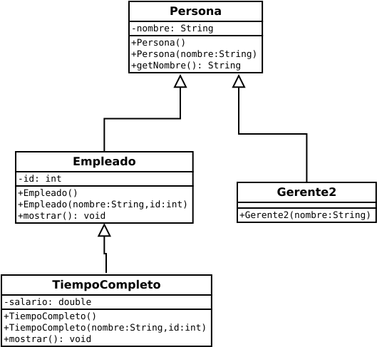

Superclase
Herencia simple. Las características y métodos se transmiten de una superclase a una o varias subclases.
Beneficios de la herencia. Ha visto que la herencia da lugar a la reutilización del código y ahora debería estar convencido de los beneficios de la reutilización del código. Otro beneficio de la herencia es que da lugar a módulos más pequeños (porque las clases se dividen en superclases y subclases). En general, los módulos más pequeños son buenos porque hay menos código para leer al buscar errores o realizar actualizaciones.
Subclase.
public class Gerente2 extends Persona {
public Gerente2(String nombre) {
super(nombre);
}
} // fin de la clase Gerente2
Subclase.
public class Empleado extends Persona {
private int id = 0;
public Empleado() {
}
public Empleado(String nombre, int id) {
super(nombre);
this.id = id;
}
public void mostrar() {
System.out.println("nombre: " + getNombre());
System.out.println("id: " + id);
}
} // fin de la clase Empleado
Subclase.
public class TiempoCompleto extends Empleado {
private double salario = 0.0;
public TiempoCompleto() {
}
public TiempoCompleto(String nombre, int id, double salario) {
super(nombre, id);
this.salario = salario;
}
public void mostrar() {
super.mostrar();
System.out.printf("salario: $%,.0f\n", salario);
}
} // fin de la clase TiempoCompleto
Superclase.
public class Persona {
private String nombre = "";
public Persona() {
}
public Persona(String nombre) {
this.nombre = nombre;
}
public String getNombre() {
return this.nombre;
}
} // fin de la clase Persona
Clase principal.
public class TiempoCompletoDriver {
public static void main(String[] args) {
TiempoCompleto tiempoCompleto = new TiempoCompleto("Shreya", 5733, 80000);
tiempoCompleto.mostrar();
System.out.println(tiempoCompleto.getNombre());
}
} // fin de la clase TiempoCompletoDriver
La salida es:
nombre: Shreya
id: 5733
salario: $80,000
Shreya
Para explicar cómo implementar la herencia, implementaremos la jerarquía Persona / Empleado / TiempoCompleto que se muestra en el diagrama de clases. Implementaremos las clases de Persona y Empleado en esta sección y las Clase TiempoCompleto.
Diagrama de clase de la herencia de la clase Persona.

El uso de super. Los objetos de Empleado heredan la variable de instancia de nombre de Persona. De ello se deduce que los objetos Empleado
deben usar el constructor Persona para inicializar sus variables de instancia de nombre heredadas. Pero, ¿cómo puede una objeto de empleado llamar a un constructor de
super(parametro);
Más programas sobre herencia simple:
Programa 1
class A {
int i;
int j;
void setij(int x, int y) {
i = x;
j = y;
}
}
class B extends A {
int total;
void suma() {
total = i + j;
}
}
class AccesoDriver {
public static void main(String args[]) {
B subO = new B();
subO.setij(10,12);
subO.suma();
System.out.println(" El total es " + subO.total);
}
}
La salida es:
El total es 22
Programa 2
class Arte {
Arte() {
System.out.println("Constructor de Arte");
}
}
class Dibujo extends Arte {
Dibujo() {
System.out.println("Costructor de Dibujo");
}
}
public class Animacion1 extends Dibujo {
Animacion1() {
System.out.println("Constructor de Animacion1");
}
public static void main(String[] args) {
Animacion1 x = new Animacion1();
}
}
La salida es:
Programa 3
class Juego {
Juego(int i) {
System.out.println("Constructor de Juego");
}
}
class JuegoMesa extends Juego {
JuegoMesa(int i) {
super(i);
System.out.println("Constructor de JuegoMesa");
}
}
public class Ajedrez1 extends JuegoMesa {
Ajedrez1() {
super(11);
System.out.println("Constructor de Ajedrez1");
}
public static void main(String[] args) {
Ajedrez1 x = new Ajedrez1();
}
}
Constructor de Juego
Constructor de JuegoMesa
Constructor de Ajedrez1
La salida es:
Constructor de Arte
Costructor de Dibujo
Constructor de Animacion1